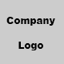

<!DOCTYPE html>
<html lang="ja">
<head>
<meta charset="utf-8">
<meta name="viewport" content="width=device-width">
<script src="https://maps.googleapis.com/maps/api/js"></script>
<title>OverlayViewの利用 | Google Maps JavaScript API</title>
<style>
#google_maps{
  width: 580px;
  height: 300px;
}

.map-overlayview {
  width: 300px;
  height: 100px;
  overflow: hidden;
  background: #fff;
  border: 1px solid #ccc;
  position: absolute;
}

.map-overlayview__figure{
  float: left;
  padding: 10px;
  border-right: 1px solid #ccc;
}

.map-overlayview__main {
  float: left;
  width: 170px;
  padding: 10px;
}

.map-overlayview__main_h {
  font-size: 0.8em;
}

.map_overlayview__main__content p{
  margin: 0;
  font-size: 0.7em;
}

</style>
</head>
<body>

<div id="google_maps"></div>
<script>
  var mapCanvas = document.getElementById('google_maps');
  var mapOptions = {
    center : new google.maps.LatLng(35.671657, 139.710748),
    zoom : 12
  };
  var myMap = new google.maps.Map( mapCanvas, mapOptions );

  var overlayhtml = [
    '<div class="map-overlayview" id="custom_overlay">',
    '  <div class="map-overlayview__figure">',
    '    ',
    '  </div>',
    '  <div class="map-overlayview__main">',
    '    <h2 class="map-overlayview__main_h">株式会社サンプル</h2>',
    '    <div class="map_overlayview__main__content">',
    '      <p>営業時間：月〜金 10:00 - 18:00</p>',
    '    </div>',
    '  </div>',
    '</div>'
  ].join("\n");


  var overlayLatLng = new google.maps.LatLng( 35.671657, 139.710748 )

  myOverlayView.prototype = new google.maps.OverlayView();
  var ol = new myOverlayView( overlayhtml, overlayLatLng );
  ol.setMap( myMap );


  function myOverlayView ( overlayhtml,latlng ){

    this.html = overlayhtml;
    this.div;
    this.position = latlng;

  }

  myOverlayView.prototype.onAdd = function(){

    this.getPanes().floatPane.innerHTML = this.html;
    this.div = document.getElementById( "custom_overlay" );

  }

  myOverlayView.prototype.draw = function(){
    var point = this.getProjection().fromLatLngToDivPixel( this.position );
    var elementY = point.y - this.div.offsetHeight / 2;

    this.div.style.top = elementY + "px";
    this.div.style.left = point.x + "px";
  }

  myOverlayView.prototype.onRemove = function(){
    this.getPanes().floatPane.removeChild( this.div );
    this.div = null;
  }


</script>
</body>
</html>
